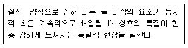
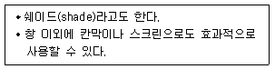
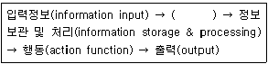
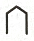
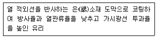
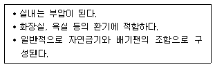
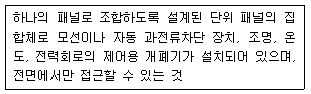
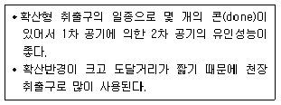

실내건축기사(구) (2021-03-07 기출문제)
1과목: 실내디자인론
1. 주택의 부엌가구 배치에 관한 설명으로 옳지 않은 것은?
- ㄷ자형의 작업대의 통로폭은 1200~1500mm가 적당하다.
- 작업면이 넓어 작업효율이 가장 좋은 작업대의 배치는 ㄴ자형 배치이다.
- 작업대는 준비대, 개수대, 조리대, 가열대, 배선대의 순으로 배열한다.
- 냉장고, 개수대, 가열대를 연결하는 작업 삼각형의 각 변의 합은 6600mm를 넘지 않도록 한다.
(정답률: 80%)

2. 정지된 인체치수와 동작을 중심으로 한 인간 공학적 측면에서 구분한 가구의 종류에 해당 하지 않는 것은?
- 칸막이 가구
- 작업용 가구
- 수납용 가구
- 인체지지용 가구
(정답률: 64%)
3. 실내디자인의 개념에 관한 설명으로 옳지 않은 것은?
- 기능보다 장식을 고려한 심미적 공간 창조 행위이다.
- 디자인 요소를 반영하여 인간환경을 구축하는 작업이다.
- 디자인의 한 분야로서 인간생활의 쾌적성을 추구하는 활동이다.
- 목적을 위한 행위이지만 그 자체가 목적이 아니고 특정한 효과를 얻기 위한 수단이다.
(정답률: 83%)
4. 조명의 배광방식에 관한 설명으로 옳지 않은 것은?
- 반간접조명은 조도가 균일하고 은은하며 전반확산조명이라고도 한다.
- 직접조명은 경제적이지만 눈부심 현상과 강한 그림자가 생기는 단점이 있다.
- 간접조명은 상향광속이 90~100%로, 반사광으로 조도를 구하는 조명방식이다.
- 반직접조명은 마감재의 반사율에 의해 밝기의 정도가 영향을 받게 되므로 마감재의 질감과 색채 등을 고려한다.
(정답률: 53%)
5. 다음 설명에 알맞은 디자인 원리는?

- 균형
- 대비
- 조화
- 리듬
(정답률: 75%)
6. 다음 중 주거공간의 효율을 높이고, 데드 스페이스(dead space)를 줄이는 방법과 가장 거리가 먼 것은?
- 플랫폼 가구를 활용한다.
- 기능과 목적에 따라 독립된 실로 계획한다.
- 침대, 계단 밑 등을 수납공간으로 활용한다.
- 가구와 공간의 치수체계를 통합하여 계획한다.
(정답률: 74%)
7. 주택의 동선계획에 관한 설명으로 옳지 않은 것은?
- 가사노동의 동선은 가능한 남측에 위치시키도록 한다.
- 사용빈도가 높은 공간은 동선을 길게 처리하는 것이 좋다.
- 동선이 교차하는 곳은 공간적 두께를 크게 하는 것이 좋다.
- 개인, 사회, 가사노동권 등의 동선은 상호간 분리하는 것이 좋다.
(정답률: 86%)
8. 상점계획에서 파사드 구성에 요구되는 소비자 구매심리 5단계(AIDMA)에 속하지 않는 것은?
- 욕망(desire)
- 기억(memory)
- 주의(attention)
- 유인(attraction)
(정답률: 60%)
9. 시스템 디자인(system design)에 관한 설명으로 옳은 것은?
- 디자인에서 시스템 적용은 모듈에 의한 표준화, 조립화와 연결된다.
- 시스템 가구는 형태적 측면에서 고려된 것으로 대량 생산과는 관계가 없다.
- 시스템 키친(system kitchen)은 주방용기인 그릇 등의 디자인을 통합하는 작업이다.
- 서비스 코어 시스템(service core system)은 가구나 조명 등 실내공간을 보조하는 시스템을 말한다.
(정답률: 76%)
10. 마르셀 브로이어에 의해 디자인된 의자로, 강철 파이프를 구부려서 지지대 없이 만든 의자는?
- 체스카 의자
- 파이미오 의자
- 레드 블루 의자
- 바르셀로나 의자
(정답률: 71%)
11. 다음 설명에 알맞은 블라인드의 종류는?

- 롤(roll) 블라인드
- 로만(roman) 블라인드
- 버티컬(vertical) 블라인드
- 베니션(venetian) 블라인드
(정답률: 84%)
12. 균형의 원리에 관한 설명으로 옳지 않은 것은?
- 크기가 큰 것이 작은 것보다 시각적 중량감이 크다.
- 색의 중량감은 색의 속성 중 명도, 채도에 영향을 받는다.
- 불규칙적인 형태가 기하학적 형태보다 시각적 중량이 크다.
- 단순하고 부드러운 질감이 복잡하고 거침 질감보다 시각적 중량감이 크다.
(정답률: 86%)
13. 공간의 형태에 관한 설명으로 옳은 것은?
- 천장면이 모아진 삼각형의 공간에서는 높이에 대한 집중도와 중심성이 상대적으로 떨어진다.
- 원형이나 정사각형의 평면 중심에 강한 요소를 도입하면 공간형태를 더욱 강조할 수 있다.
- 공간의 형태는 일관성이나 축에 따라 자연적인 것과 유기적인 형태의 것으로 구분할 수 있다.
- 천장면이 곡면일 경우 공간의 방향성은 공간의 중심으로 모이게 되며 정적인 분위기가 된다.
(정답률: 54%)
14. 착시 현상의 사례 중 분트 도형의 내용으로 옳은 것은?
- 같은 길이의 수직선이 수평선보다 길어 보인다.
- 같은 길이의 직선이 화살표에 의해 길이가 다르게 보인다.
- 사선이 2개 이상의 평행선으로 중단되며 서로 어긋나 보인다.
- 같은 크기의 2개의 부채꼴에서 아래쪽의 것이 위의 것보다 커 보인다.
(정답률: 45%)
15. 사무소 건축에서 유효율(rentable ratio)의 의미로 알맞은 것은?
- 연면적에 대한 대실면적의 비율
- 연면적에 대한 건축면적의 비율
- 대지면적에 대한 바닥면적의 비율
- 대지면적에 대한 건축면적의 비율
(정답률: 58%)
16. 상점의 동선계획에 관한 설명으로 옳지 않은 것은?
- 고객동선은 고객의 편의를 위해 가능한 한 짧게 한다.
- 동선의 흐름은 공간적, 물리적인 흐름뿐만이 아니라 시각적인 흐름도 원활하도록 한다.
- 고객동선은 흐름의 연속성이 상징적, 지각적으로 분할되지 않도록 수평적 바닥이 되도록 한다.
- 동선은 고객동선, 종업원동선, 상품동선으로 구분할 수 있으며, 각각의 동선은 교차되지 않도록 한다.
(정답률: 84%)
17. 공간의 차단적 구획방법에 속하지 않는 것은?
- 커튼
- 열주
- 조명
- 유리창
(정답률: 76%)
18. VMD(visual merchandising) 전개를 위한 상품 제안(merchandising presentation)의 세 가지 형식 중 IP(Item presentation)의 설명으로 옳지 않은 것은?
- 색상, 사이즈, 스타일, 분류하여 진열한다.
- 개개의 상품을 분류, 정리하여 보기 쉽고 고르기 쉽게 진열한다.
- 행거, 쇼케이스, 선반류 등 매장 내의 모든 집기류를 활용하여 진열한다.
- 상반신, 소도구류 등을 활용하여 품목, 스타일, 색상 등을 중점적으로 표현한다.
(정답률: 50%)
19. 다음 중 실내공간에서 단면의 비례를 결정하는데 가장 기본적으로 고려하여야 하는 요소는?
- 개구부와 가구의 폭
- 인간의 시점과 천장고
- 가구의 높이와 이용도
- 공간의 가로 세로 비율
(정답률: 55%)
20. 현장감을 가장 실감나게 표현하는 방법으로 하나의 사실 또는 주제의 시간상황을 일정한 시간에 고정시켜 연출하는 전시공간의 특수 전시기법은?
- 디오라마 전시
- 파노라마 전시
- 아일랜드 전시
- 하모니카 전시
(정답률: 73%)
2과목: 색채학
21. 다음 중 단맛의 느낌을 수반하는 배색은?
- 빨강 핑크
- 브라운, 올리브
- 파랑, 갈색
- 초록, 회색
(정답률: 82%)
22. 색채조절의 목적으로 가장 적합한 것은?
- 수익 증대를 주목적으로 한다.
- 작업의 활동적인 의욕을 높인다.
- 주변 환경과의 조화를 무엇보다 우선시 한다.
- 심미적인 조화를 우선적으로 고려한다.
(정답률: 55%)
23. 다음 중 L*a*b* 색 모델에 관한 설명으로 틀린 것은?
- 균일 색 모델(uniform color madel)이다.
- L*은 밝기, a*와 b*는 색도 성분에 해당한다.
- 균일 색 모델에는 L*a*b*, L*u*v* 등의 모델이 존재한다.
- green에서 magenta 사이의 색 단계는 b*축이다.
(정답률: 62%)
24. 횃불놀이, TV나 영화 등에서 나타나는 색의 현상은?
- 정의 잔상
- 부의 잔상
- 연변 대비
- 색상 동화
(정답률: 71%)
25. 망막에서 명소시의 색채시각과 관련된 광수용이 이루어지는 부분은?
- 간상체
- 추상체
- 봉상체
- 맹점
(정답률: 67%)
26. 다음 중 음식점에서 가장 식욕을 돋우는 색상은?
- 10YR
- 5G
- 2.5B
- 7.5PB
(정답률: 78%)
27. 동시 대비 중 무채색과 유채색 사이에 일어나지 않는 대비는?
- 명도 대비
- 색상 대비
- 채도 대비
- 보색 대비
(정답률: 44%)
28. 다음 중 색입체에 관한 설명으로 틀린 것은?
- 색의 3속성을 3차원 공간에 계통적으로 배열한 것이다.
- 오스트발트 색체계의 색입체는 원형이다.
- 먼셀 색체계의 색입체는 나무 형태를 닮아 color tree 라고 한다.
- 색입체의 중심축은 무채색 축이다.
(정답률: 68%)
29. 미도(美度) M=O/C 라는 버크호프(G. D. Birkhoff)공식에서 O는 질서성의 요소일 때 C는?
- 복잡성의 요소
- 대비성의 요소
- 색온도의 요소
- 색의 중량적 요소
(정답률: 49%)
30. 하늘의 색과 같이 넓이의 느낌은 있으나 거리감이 불확실하고 물체감 없이 색체만을 느끼게 하는 색은?
- 표면색
- 공간색
- 광원색
- 면색
(정답률: 48%)
31. 디지털 색체계의 유형에 대한 설명으로 틀린 것은?
- HSB : 색의 3가지 기본 특성인 색상, 채도, 명도에 의해 표현하는 방식이다.
- RGB : 컴퓨터 모니터와 스크린 같은 빛의 원리로 컬러를 구현하는 장치에서 사용된다.
- CMYK : 표현할 수 있는 컬러 범위는 RGB 형식보다 넓다.
- L*a*b* : CIE가 1976년에 추천한 것으로 지각적으로 거의 균등한 간격을 가진 색공간에 의한 색상모형이다.
(정답률: 68%)
32. 색의 속성에 관한 설명 중 틀린 것은?
- 빨강, 파랑, 노랑 등 다른 색과 구별되는 그 색만의 고유한 성질을 색상이라고 한다.
- 무채색 이외의 모든 색은 유채색이다.
- 무채색은 채도가 0인 상태인 것을 말한다.
- 물체색에는 백색, 회색, 흑색이 없다.
(정답률: 76%)
33. 색과 색의 상징이 잘못 연결된 것은?
- 빨강: 정열, 사랑
- 노랑: 신앙, 소박
- 파랑: 젊음, 성실
- 초록: 희망, 휴식
(정답률: 82%)
34. 배색된 색채들이 서로 공통되는 상태와 속성을 가질 때의 조화 원리는?
- 질서의 원리
- 비모호성의 원리
- 유사의 원리
- 대비의 원리
(정답률: 75%)
35. 다음 중 보색 관계가 아닌 색은?
- 빨강 - 청록
- 노랑 - 남색
- 연두 - 보라
- 자주 - 주황
(정답률: 75%)
36. CIE 색체계에 대한 설명 중 옳은 것은?
- 국제색채위원회에서 정한 표색법이다.
- 현색계의 가장 대표적인 색체계이다.
- XYZ 좌표계를 사용한다.
- 적, 황, 청의 원색광을 적절히 혼합하여 모든 색을 만들 수 있다는 것에 기초한다.
(정답률: 57%)
37. 터널의 출입구 부분에 조명이 집중되어 있고, 중심부로 갈수록 광원의 수가 적어지며 조도수준이 낮아지고 있다. 이것은 어떤 순응을 고려한 설계인가?
- 색순응
- 명순응
- 암순응
- 무채순응
(정답률: 77%)
38. 다음 중 가장 가벼운 느낌을 주는 배색은?
- 초록 - 검정
- 주황 - 노랑
- 빨강 - 파랑
- 청록 - 초록
(정답률: 80%)
39. 다음 중 페일(pale) 톤과 가장 가까운 것은?
- 저명도 저채도의 색
- 강하고 힘 있는 고채도의 색
- 우아하고 부드러운 고명도와 저채도의 색
- 탁하고 침울한 저명도와 고채도의 색
(정답률: 62%)
40. 먼셀(Munsell) 색체계의 색표기 방법 중 명도가 가장 높은 색은?
- 2.5R 2/8
- 10R 9/1
- 5R 4/14
- 75.Y 7/12
(정답률: 65%)
3과목: 인간공학
41. 주파수가 같거나 배수인 다른 음을 만나서 음량이 증폭되는 현상은?
- 공명
- 은폐
- 간섭
- 감쇠
(정답률: 68%)
42. 인간공학적인 사고방식이 아닌 것은?
- 인간이 실수를 하여도 안전이 유지되도록 설비나 시스템을 설계한다.
- 설비나 시스템을 설계자의 개념이 아니라 사용자의 측면에서 설계한다.
- 기본적으로 작업에 적합한 사람들을 선별하여 배치하는 방법(fitting the human to the task)을 선택한다.
- 인간의 오류는 조작자뿐만 아니라 환경적 요인, 관리적 요인 등 복합적인 요인에 의한 것이므로 시스템적 사고방식이 필요하다.
(정답률: 62%)
43. 근육의 대사(代謝)에 대한 설명으로 옳지 않은 것은?
- 운동에 의한 산소소비량은 일정 수준 이상 증가하지 않는다.
- 젖산은 유기성 과정에 의하여 물과 CO2로 분해되어 발산된다.
- 일반적으로 신체활동 시 산소의 공급이 충분할 때 젖산이 많이 축적된다.
- 일정 수준 이상의 활동이 종료된 후에도 일정 기간 동안 산소가 더 필요하게 된다.
(정답률: 63%)
44. 동작 경제의 원칙으로 옳지 않은 것은?
- 동작의 범위는 최소로 한다.
- 손의 동작은 항상 직선으로 동작한다.
- 가능한 한 관성, 중력 등을 이용하여 작업한다.
- 휴식시간을 제외하고는 양손을 동시에 쉬지 않도록 한다.
(정답률: 60%)
45. 신체부위의 동작 유형에서 팔꿈치를 굽히는 것과 같이 신체 부위 간의 각도가 감소하는 동작을 무엇이라 하는가?
- 굴곡(flexion)
- 신전(extention)
- 하향(pronation)
- 외전(abduction)
(정답률: 62%)
46. 성인이 하루에 평균적으로 소모하는 에너지는 4300kcal이고, 기초대사와 여가(leisure)에 필요한 에너지는 2300kcal이라 할 때, 8시간의 근로시간 동안 소요되는 분당 에너지는 약 얼마인가?
- 2 kcal/min
- 4 kcal/min
- 8 kcal/min
- 10 kcal/min
(정답률: 62%)
47. 다음 인간 또는 기계에 의해 수행되는 기본 기능의 과정 중 ( )안에 해당하는 기능은?

- 감지(sensing)
- 피드백(feedback)
- 대응 선택(response selection)
- 시스템 환경(system environment)
(정답률: 69%)
48. 소음에 의한 난청을 방지하기 위한 방법이 아닌 것은?
- 소음원을 격리시킨다.
- 주변에 차폐시설을 한다.
- 주변의 배치를 재조정한다.
- 소음원의 진동수를 4000Hz 전후로 조정한다.
(정답률: 66%)
49. 하나의 계기 속에 여러 가지 모양의 시각적 표시방식을 서로 결합하여 사용하려고 할 때의 표시형식에 관한 설명으로 옳은 것은?
- 서로 관련성이 없는 표시형식 만을 모아서 넣는다.
- 아름답게 보이기 위해서는 불필요한 표시형식을 넣어도 무방하다.
- 고정, 이동부분, 눈금의 크기 등 각 요소의 표시형식을 통일한다.
- 고정, 이동부분, 눈금의 크기 등 각 요소의 표시형식을 눈금면과 최대한 멀리 배치한다.
(정답률: 73%)
50. 다음 중 의자에 앉아서 작업하는 작업대의 높이를 결정할 때 참고 되는 신체지수와 가장 거리가 먼 것은?
- 오금 높이
- 가슴 높이
- 대퇴 높이
- 팔꿈치 높이
(정답률: 38%)
51. 다음 중 조도(illumination)의 단위에 해당하는 것은?
- 칸델라(cd)
- 푸트캔들(fc)
- 램버트(L)
- 루멘(lumen)
(정답률: 53%)
52. 물리적 자극을 상대적으로 판단하는데 있어 특정 감각의 변화감지역은 사용되는 표준자극의 크기에 비례한다는 법칙은?
- Miller의 법칙
- Taylor의 법칙
- Weber의 법칙
- Newton의 법칙
(정답률: 62%)
53. 작업장 조명방법에 대한 설명으로 옳지 않은 것은?
- 국소조명은 작업면 상의 필요한 장소에만 낮은 조도를 취하는 방법으로 눈의 피로를 감소시킬 수 있다.
- 전반조명은 작업면에 균등한 조도를 얻기위해 광원을 일정한 간격과 일정한 높이로 배치한 조명방식이다.
- 간접조명은 빛을 반사시켜 조명하는 방법으로 눈부심이 적지만 설치가 복잡하며 실내의 입체감이 적어진다.
- 직접조명은 빛의 반사 없이 직접적으로 작업면에 도달하기 때문에 기구의 구조에 따라 눈부심이 발생할 수 있다.
(정답률: 52%)
54. 촉각을 이용한 손잡이 설계 시 요구되는 일반적 조건과 가장 거리가 먼 것은?
- 미끄러움이 적어야 한다.
- 촉각에 의해 식별할 수 있어야 한다.
- 손잡이의 방향성을 한정시키지 않아야 한다.
- 작업에 필요한 힘에 대하여 적당한 크기가 되어야 한다.
(정답률: 76%)
55. 눈의 구조에 대한 설명으로 옳지 않은 것은?
- 안구의 벽은 공막(sclera), 맥락막(choroid), 망막(retina)으로 되어 있다.
- 수정체(lens)는 홍채 바로 뒤에 있는 투명한 물체로 양면이 돌출된 모양의 구조물이다.
- 초자체(vitreous bidy)는 수정체와 망막사이의 공간에 들어 있는 무색 투명한 조직이다.
- 안방(chamber)은 각막부를 제외한 안구 전면과 안검의 후면을 덮고 있는 얇은 점막이다.
(정답률: 47%)
56. 인간의 눈에 대한 설명으로 옳은 것은?
- 망막을 구성하고 있는 감광요소 중 간상세포는 색의 구분을 담당한다.
- 황반 부위에는 간상세포가 집중적으로 분포되어 있다.
- 시력은 시각 1분의 역자승수를 표준단위로 사용한다.
- 시각이란 보는 물체에 의한 눈에서의 대각이며, 일반적으로 분(′)단위로 나타낸다.
(정답률: 54%)
57. 시각적 표시장치에 있어 Easterby가 주장한 표지 도안의 원칙에 관한 설명으로 옳지 않은 것은?
- 표지는 가능한 한 통일성이 있어야 한다.
- 테두리 속의 그림은 지각과정을 감소시킨다,
- 그림의 경계는 대비(contrast)가 좋아야한다.
- 그림과 바탕의 구별이 분명하고 안정되어야 한다.
(정답률: 70%)
58. 수치를 신속하고 정확하게 판독하기 위한 계기판의 지침으로 옳지 않은 것은?

(정답률: 68%)
59. 인체의 각 기관계와 속하는 기관이 올바르게 짝지어진 것은?
- 순환계 : 심장
- 순환계 : 신경
- 호흡기계 : 부신
- 호흡기계 : 림프관
(정답률: 63%)
60. 인체에서의 열교환 과정을 나타내는 열균형 방정식의 요소가 아닌 것은?
- 복사
- 대류
- 증발
- 전도
(정답률: 47%)
4과목: 건축재료
61. 다음 중 유기질 단열재료가 아닌 것은?
- 연질 섬유판
- 세라믹 파이버
- 폴리스틸렌 폼
- 셀룰로즈 섬유판
(정답률: 57%)
62. 점토소성제품 중 흡수성이 극히 작고 경도와 강도가 가장 크며, 소성온도는 1250~1430℃로써 고급타일이나 위생도기를 만드는데 사용되는 것은?
- 토기
- 자기
- 석기
- 도기
(정답률: 72%)
63. 조강포틀랜드 시멘트를 사용하기에 가장 부적절한 것은?
- 긴급 공사
- 프리스트레스트 콘크리트
- 매스 콘크리트
- 동절기 공사
(정답률: 40%)
64. 아스팔트 방수 재료에 관한 설명으로 옳지 않은 것은?
- 아스팔트 루핑은 펠트의 양면에 블로운 아스팔트를 피복하고, 그 표면에 가는 모래나 광물질 미분말을 부착한 시트상의 제품이다.
- 개량아스팔트 방수시트는 주로 토치버너의 가열에 의해 공사가 이루어진다.
- 아스팔트 프라이머는 콘크리트 바탕과 방수시트의 접착을 양호하게 유지하기 위한 바탕조정용 접착을 양호하게 유지하기 위한 바탕조정용 접착제이다.
- 망상 아스팔트 루핑은 아스팔트의 절연 공법에 사용된다.
(정답률: 43%)
65. 콘크리트용 혼화제 중 AE감수제의 사용에 따른 효과로 옳지 않은 것은?
- 굳지 않은 콘크리트의 워커빌리티를 개선하고 재료 분리가 방지된다.
- 동결융해에 대한 저항성이 증대된다.
- 건조수축이 감소된다.
- 수밀성이 향상되고 투수성이 증가한다.
(정답률: 44%)
66. 다음 설명에 해당하는 유리는?

- 강화유리
- 접합유리
- 로이유리
- 배강도유리
(정답률: 63%)
67. 굳지 않은 콘크리트의 성질 중 굵은 골재의 분리에 영향을 주는 인자와 거리가 먼 것은?
- 골재의 강도
- 골재의 종류
- 단위수량
- 골재의 입형
(정답률: 47%)
68. 목재의 일반적 설질에 관한 설명으로 옳지 않은 것은?
- 섬유포화점 이상의 함수상태에서는 함수율의 증감에도 신축을 일으키지 않는다.
- 섬유포화점 이상의 함수상태에서는 함수율이 증가할수록 강도는 감소한다.
- 기건상태란 통상 대기의 온도·습도와 평형을 이룬 목재의 수분 함유 상태를 말한다.
- 섬유방향에 따라서 전기전도율은 다르다.
(정답률: 53%)
69. 래커(lacquire)에 관한 설명으로 옳지 않은 것은?
- 도막형성은 주로 용제의 증발에 따른 건조에 의한다.
- 도막이 단단하지 않으며, 에나멜 도막은 내후성이 나쁘다.
- 건조시간을 지연시킬 목적으로 신너(thinner)를 첨가하는 경우도 있다.
- 안료를 배합하지 않은 것을 클리어래커라 한다.
(정답률: 50%)
70. 강화플라스틱(FRP)의 재료로서 전기절열성, 내열성, 내약품성이 뛰어나며 레진콘크리트용 수지, 도료, 접착제 등에 사용되는 수지는?
- 알키드수지
- 실리콘수지
- 불포화 폴리에스테르수지
- 요소수지
(정답률: 38%)
71. 초고층 인텔리전트 빌딩이나, 핵융합로 등과 같이 강력한 자기장이 발생할 가능성이 있는 철골 구조물의 강재나, 철근 콘크리트용 봉강으로 사용되는 것은?
- 초고장력강
- 비정질(Amorphous)금속
- 구조용 비자성강
- 고크롬강
(정답률: 37%)
72. 목섬유(wood fiber)를 합성수지 접착제, 방부제 등을 첨가·결합시켜 만든 것으로 밀도가 균일하기 때문에 측면의 가공성이 매우 좋으나, 습기에 약하여 부스러지기 쉬운 것은?
- M.D.F
- 파티클 보드
- 침엽수 제재목
- 합판
(정답률: 56%)
73. 내화점토질 벽돌은 최소 얼마 이상의 내화도를 가진 것을 의미하는가?
- 내화도 20 이상
- 내화도 22 이상
- 내화도 24 이상
- 내화도 26 이상
(정답률: 48%)
74. 미장공사의 바탕조건으로 옳지 않은 것은?
- 미장층보다 강도는 크지만 강성은 작을 것
- 미장층과 유해한 화학반응을 하지 않을 것
- 미장층의 경화, 건조에 지장을 주지 않을 것
- 미장층의 시공에 적합한 흡수성을 가질 것
(정답률: 66%)
75. 질이 단단하고 내구성 및 강도가 크며 외관이 수려하나 함유광물의 열팽창계수가 달라 내화성이 약한 석재로 외장, 내장, 구조재, 도로포장재, 콘크리트 골재 등에 사용되는 것은?
- 응회암
- 화강암
- 화산암
- 대리석
(정답률: 64%)
76. 돌로마이트 플라스터에 관한 설명으로 옳지 않은 것은?
- 건조수축에 대한 저항성이 크다.
- 소석회에 비해 점성이 높고 작업성이 좋다.
- 변색, 냄새, 곰팡이가 없으며 보수성이 크다.
- 회반죽에 비해 조기강도 및 최종강도가 크다.
(정답률: 37%)
77. 강의 기계적 성질과 관련된 항복비를 옳게 설명한 것은? (단, 응력-변형률 곡선 상 명칭을 기준으로 한다.)
- 항복점과 인장강도의 비
- 항복점과 압축강도의 비
- 비례한계점과 인장강도의 비
- 비례한계점과 압축강도의 비
(정답률: 50%)
78. 목재의 건조 목적으로 보기 어려운 것은?
- 수축 및 균열방지
- 강도 및 내구성의 증진
- 균류에 의한 부식과 벌레에 의한 피해를 방지
- 가공성의 증진
(정답률: 60%)
79. 도장재료를 사용하는 목적이 아닌 것은?
- 구조체 강도 증가
- 표면보호 및 미화
- 방습, 방화
- 녹방지
(정답률: 71%)
80. 유리에 관한 설명으로 옳지 않은 것은?
- 망입유리는 화재 시 개구부에서의 연소를 방지하는 효과가 있으며, 유리파편이 거의 튀지 않는다.
- 복층유리는 단판유리보다 단열효과가 우수하므로 냉, 난방 부하를 경감시킬 수 있다.
- 강화유리는 파손 시 파편이 작기 때문에 파편에 의한 손상사고를 줄일 수 있다.
- 열선흡수유리는 유리 한 면에 열선반사막을 입힌 판유리로서, 가시광선의 투과율이 30%정도 낮아 외부로부터 시선을 차단할 수 있다.
(정답률: 52%)
5과목: 건축일반
81. 문화 및 집회시설 중 공연장의 개별 관람실의 출구 설치 기준에 관한 내용으로 틀린 것은? (단, 관람실의 바닥면적은 300m2 이다.)
- 관람실로부터 바깥쪽으로의 출구로 쓰이는 문은 안여닫이로 하여서는 안 된다.
- 관람실별로 2개소 이상 설치한다.
- 각 출구의 유효너비는 1.5m 이상으로 한다.
- 개별 관람실 출구의 유효너비의 합계는 최소 1.5m 이상으로 한다.
(정답률: 49%)
82. 소방용품 중 피난구조설비를 구성하는 제품 또는 기기에 해당하지 않는 것은?
- 누전경보기
- 공기호흡기
- 통로유도등
- 완강기
(정답률: 55%)
83. 일정 기준 이상의 방염성능이 있는 실내장식물 등을 설치하여야 하는 특정소방대상물에 해당하지 않는 것은?
- 층수가 5층인 아파트
- 숙박이 가능한 수련시설
- 노유자시설
- 의료시설
(정답률: 67%)
84. 철근콘크리트 보의 늑근에 대한 설명으로 옳은 것은?
- 보의 양단일수록 많이 배근한다.
- 보의 중앙에는 필요하지 않다.
- 보의 양단일수록 적게 배근한다.
- 보의 중앙에서 많이 배근한다.
(정답률: 57%)
85. 숙박시설의 객실 간 경계벽 구조의 기준이 틀린 것은? (단, 무근콘크리트조는 바름두께를 포함한 기준 수치이다.)
- 벽돌조로서 두께가 19cm 이상인 것
- 철근콘크리트조로서 두께가 8cm 이상인 것
- 콘크리트블록조로서 두께가 19m 이상인 것
- 무근콘크리트조로서 두께가 10cm 이상인 것
(정답률: 58%)
86. 건축물의 피난층 외의 층에서 피난층 또는 지상으로 통하는 직통계단을 설치할 때, 거실의 각 부분으로부터 계단에 이르는 보행거리 기준은 최대 얼마 이하가 되도록 하여야 하는가? (단, 기타의 경우는 고려하지 않는다.)
- 20m
- 30m
- 70m
- 100m
(정답률: 61%)
87. 조적식구조에 대한 설명으로 틀린 것은?
- 조적식구조인 내력벽의 기초 중 기초판은 철근콘크리트구조 또는 무근콘크리트구조로 한다.
- 조적식구조인 내력벽으로 둘러쌓인 부분의 바닥면적은 80m2를 넘을 수 없다.
- 조적식구조인 내력벽의 길이는 8m를 넘을 수 없다.
- 조적식구조인 내력벽의 두께는 바로 윗층의 내력벽의 두께 이상이어야 한다.
(정답률: 54%)
88. 아르누보 건축가와 작품의 연결이 틀린 것은?
- 빅토르 오르타(Victor Horta) - 타셀 저택
- 안토니오 가우디(Antonio Gaudi) - 카사 밀라
- 핵토르 귀마르(Hector Guimard)- 파리 지하철역 입구
- 피터 베렌스(Peter Berens) - 귀엘 공원
(정답률: 44%)
89. 플레이트 거더(plate Girder)를 구성하는 기본 원칙에 관한 설명으로 틀린 것은?
- 웨브플레이트는 전단력을 부담하며 전단면에 대해 전단응력이 균등히 분포되는 것으로 생각한다.
- 플랜지는 휨에 의한 인장 및 압축력을 부담한다.
- 스티프너는 플랜지 플레이트 및 웨브플레이트의 좌굴 방지용이다.
- 휨에 대한 내력 부족을 보완하기 위해 커버플레이트를 설치한다.
(정답률: 37%)
90. 비상용승강기 승강장의 구조 기준에 대한 설명으로 틀린 것은? (단, 건축물의 설비기준 등에 관한 규칙에 따른다.)
- 승강장의 바닥면적은 비상용승강기 1대에 대하여 6m2 이상이어야 한다. 다만, 옥외에 승강장을 설치하는 경우에는 그러하지 아니하다.
- 피난층이 있는 승강장의 출입구로부터 도로 또는 공지에 이르는 거리가 40m 이하이어야 한다.
- 벽 및 반자가 실내에 접하는 부분의 마감재료는 불연재료로 하여야 한다.
- 승강장의 창문·출입구 기타 개구부를 제외한 부분은 당해 건축물의 다른 부분과 내화구조의 바닥 및 벽으로 구획하여야 한다.
(정답률: 50%)
91. 방염대상물품의 방염 성능기준에서 불꽃에 의하여 완전히 녹을 때까지 불꽃의 접촉 횟수는 최소 몇 회 이상인가? (단, 소방청장이 정하여 고시하는 사항은 고려하지 않는다.)
- 2회
- 3회
- 5회
- 7회
(정답률: 62%)
92. 우리나라에 현존하는 전통 목조건축 중에서 가장 오래된 건축물의 양식은?
- 주심포양식
- 다포양식
- 익공양식
- 민도리식
(정답률: 55%)
93. 건축물의 피난·방화구조 등의 기준에 관한 규칙에 따라, 다음 중 거실의 용도에 따른 조도 기준이 가장 높은 것은? (단, 바닥에서 85cm의 높이에 있는 수평면의 조도를 기준으로 한다.)
- 독서
- 일반 사무
- 제도
- 회의
(정답률: 66%)
94. 환기를 위하여 거실에 설치하는 창문등의 최소 면적으로 옳은 것은? (단, 거실의 바닥면적은 300m2이며, 기계환기 장치 및 중앙관리방식의 공기조화설비를 설치하지 않은 경우)
- 10m2
- 15m2
- 25m2
- 30m2
(정답률: 56%)
95. 특정소방대상물의 소방안전관리 업무 중 소방시설관리업의 등록을 한 자에게 대행하게 할 수 있는 업무는?
- 소방계획서의 작성 및 시행
- 자위소방대 및 초기대응체계의 구성·운영·교육
- 피난시설, 방화구획 및 방화시설의 유지·관리
- 소방훈련 및 교육
(정답률: 66%)
96. 목구조의 맞춤에 사용되는 보강철물의 연결이 틀린 것은?
- 띠쇠 - 왕대공과 ㅅ자보
- 감잡이쇠 - 왕대공과 평보
- 안장쇠 - 큰 보와 작은 보
- 듀벨 - 샛기둥과 층도리
(정답률: 48%)
97. 공동 소방안전관리자 선임대상 특정소방대상물의 연면적 기준으로 옳은 것은? (단, 복합건축물의 경우)
- 2000m2 이상
- 3000 이상
- 5000m2 이상
- 10000m2 이상
(정답률: 38%)
98. 건축물의 방화구획 설치기준과 관련하여, 10층 이하의 층은 바닥면적 얼마 이내마다 방화구획을 구획하여야 하는가? (단, 스프링클러와 같은 자동식 소화설비를 설치한 경우)
- 1천제곱미터 이내
- 2천제곱미터 이내
- 3천제곱미터 이내
- 4천제곱미터 이내
(정답률: 37%)
99. 피난 용도로 쓸 수 있는 광장을 옥상에 설치해야 하는 시설 기준에 해당하는 것은?
- 5층 이상인 층이 공동주택의 용도로 쓰는 경우
- 5층 이상인 층이 학교의 용도로 쓰는 경우
- 5층 이상인 층이 전시장의 용도로 쓰는 경우
- 5층 이상인 층이 장례시설의 용도로 쓰는 경우
(정답률: 37%)
100. 소방시설의 종류 및 각각에 해당하는 기계·기구 또는 설비의 연결이 잘못 짝지어진 것은?
- 소화설비 - 스프링클러설비
- 경보설비 - 자동화재탐지설비
- 피난구조설비 - 방열복, 방화복
- 소화활동설비 - 옥내소화전설비
(정답률: 44%)
6과목: 건축환경
101. 공기 중의 음속이 344m/s, 주파수가 450Hz 일 때 음의 파장(m)은?
- 0.33
- 0.76
- 1.31
- 6.25
(정답률: 57%)
102. 반사형 단열재에 관한 설명으로 옳지 않은 것은?
- 반사하는 표면이 다른 재료와 접촉될 때 단열효과가 증가한다.
- 반사형 단열은 복사의 형태로 열이동이 이루어지는 공기층에 유효하다.
- 중공벽 내의 중앙에 알루미늄박을 이중으로 설치하면 큰 단열교화가 있다.
- 중공벽 내의 고온측면에 복사율이 낮은 알루미늄박을 설치하면 표면 열전달저항이 증가한다.
(정답률: 41%)
103. 다음의 공기조화방식 중 전공기 방식(all air system)에 속하지 않는 것은?
- 단일덕트방식
- 2중덕트방식
- 멀티존 유닛방식
- 팬코일 유닛방식
(정답률: 59%)
104. 다음 설명에 알맞은 기계식 환기방식은?

- 흡출식 환기방식
- 압입식 환기방식
- 병용식 환기방식
- 중력식 환기방식
(정답률: 56%)
1⑤. 다음 중 표면결로의 방지 방법과 가장 관계가 먼 것은?
- 실내에서 수증기 발생을 억제한다.
- 방습층을 단열재의 실외측에 설치한다.
- 환기에 의해 실내 절대습도를 저하한다.
- 단열강화에 의해 실내측 표면온도를 상승시킨다.
(정답률: 47%)
106. 가로×세로×높이가 각각 8m×7m×3m인 실내의 바닥, 천장, 병의 흡음률이 각각 0.1, 0.3, 0.2 일 때, 잔향시간은? (단, sabine의 잔향공식 사용)
- 약 0.7초
- 약 1.5초
- 약 2.5초
- 약 3.3초
(정답률: 22%)
107. 전등 1개의 광속이 1000[lm]인 전등 20개를 면적 100m2인 실에 점등했을 때 이 실의 평균 조도는? (단, 조명율은 0.5, 감광보상율은 1로 한다.)
- 20[lx]
- 50[lx]
- 100[lx]
- 200[lx]
(정답률: 40%)
108. 조명에서 발생하는 눈부심에 관한 설명으로 옳지 않은 것은?
- 광원의 크기가 클수록 눈부심이 강하다.
- 광원의 휘도가 작을수록 눈부심이 강하다.
- 광원이 시선에 가까울수록 눈부심이 강하다.
- 배경이 어둡고 눈이 암순응 될수록 눈부심이 강하다.
(정답률: 70%)
109. 다음 설명에 알맞은 전시설비 관련 장치는?

- 아웃렛
- 분전반
- 배전반
- 캐비닛
(정답률: 53%)
110. 트랩 봉수의 파괴원인에 속하지 않는 것은?
- 공동 현상
- 모세관 현상
- 자기사이펀 작용
- 운동량에 의한 관성
(정답률: 37%)
111. 자연환기에 관한 설명으로 옳지 않은 것은?
- 개구부 면적이 클수록 환기량은 많아진다.
- 실내외의 온도차가 클수록 환기량은 많아진다.
- 일반적으로 공기유입구와 유출구 높이 차이가 클수록 환기량은 많아진다.
- 2개의 창을 한 쪽 벽면에 설치하는 것이 양쪽 벽에 대면하여 설치하는 것보다 환기에 효과적이다.
(정답률: 71%)
112. 통기관의 관경에 관한 설명으로 옳지 않은 것은?
- 신정통기관의 관경은 배수수직관의 관경보다 작게 해서는 안된다.
- 각개통기관의 관경은 그것이 접속되는 배수관관경보다 작게 해서는 안된다.
- 결합통기관의 관경은 통기수직관과 배수수직관 중 작은 쪽 관경 이상으로 한다.
- 루프통기관의 관경은 배수수평지관과 통기수직관 중 작은 쪽 관경의 1/2 이상으로 한다.
(정답률: 37%)
113. 플러시 밸브식 대변기에 관한 설명으로 옳지 않은 것은?
- 대변기의 연속사용이 가능하다.
- 일반 가정용으로 주로 사용된다.
- 세정음은 유수음도 포함되기 때문에 소음이 크다.
- 로 탱크식에 비해 화장실을 넓게 사용할 수 있다는 장점이 있다.
(정답률: 55%)
114. 주광률에 대한 용어 설명으로 옳은 것은?
- 조명기구에 의한 상하방향으로의 배광정도를 나타내는 값
- 실내의 조도가 옥외의 조도 몇 %에 해당하는가를 나타내는 값
- 램프 광속 중 조명범위에 유효하게 이용되는 광속의 비율을 나타내는 값
- 조명시설을 어느 기간 사용한 후의 작업면상의 평균조도와 초기조도와의 비율을 나타내는 값
(정답률: 58%)
115. 다음 설명에 알맞은 취출구의 종류는?

- 팬형
- 웨이형
- 노즐형
- 아네모스탯형
(정답률: 53%)
116. 다공질재 흡읍재료에 관한 설명으로 옳지 않은 것은?
- 주파수가 낮을수록 흡음률이 높아진다.
- 표면마감처리방법에 의해 흡음 특성이 변한다.
- 두께를 늘리면 저주파수의 흡음률이 높아진다.
- 강성벽 앞면의 공기층 두께를 증가시키면 저주파수의 흡음률이 높아진다.
(정답률: 45%)
117. 열용량에 관한 설명으로 옳지 않은 것은?
- 열용량이 큰 물체는 일반적으로 비열이 적다.
- 열용량이 큰 물체로 둘러싸인 실은 시간지역 효과가 상대적으로 크다.
- 열용량이 큰 물체는 온도를 올리기 위해 보다 많은 열량을 필요로 한다.
- 열용량이 큰 물체는 가열된 후 식는 데에도 상대적으로 시간이 많이 소요된다.
(정답률: 62%)
118. 실내에 1000[cd]의 전등이 있을 때, 이 전등으로부터 4m 떨어진 곳의 직각면 조도는?
- 62.5[lx]
- 125[lx]
- 250[lx]
- 500[lx]
(정답률: 38%)
119. 전열에 관한 설명으로 옳은 것은?
- 벽체에 열전달저항은 벽체에 닿는 풍속이 클수록 크다.
- 벽이 결로 등에 의해 습기를 포함하면 열관류 저항이 커진다.
- 유리의 열관류저항은 그 양측 표면 열전달 저항의 합의 2배 값과 거의 같다.
- 벽과 같은 고체를 통하여 유체(유기)에서 유체(공기)로 열이 전해지는 현상을 열관류라고 한다.
(정답률: 51%)
120. 실내공기질 관리법령에 따른 오렴물질에 속하지 않는 것은?
- 석면
- 라돈
- 일산화탄소
- 이산화유황
(정답률: 51%)